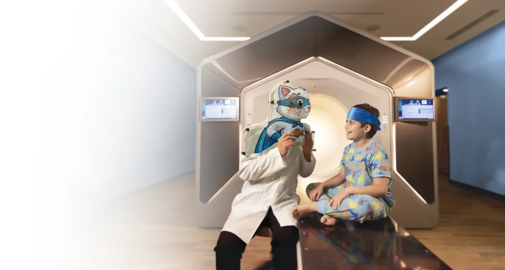

Cáncer
Radioterapia Ethos
Único centro en Latinoamérica con radioterapia adaptativa guiada por IA.
Más que un hospital
Orientación al paciente y servicios hospitalarios al nivel de los mejores del mundo. La vida nos une.

Cáncer
Único centro en Latinoamérica con radioterapia adaptativa guiada por IA.
Prevención
Masculino, femenino y empresarial según etapa de vida.
Consulta
$900 MXN. Sin cita previa. 8:00 a 20:00 h.
Presencia
Sur 136 No. 116, Las Américas — (55) 5230 8000. Av. Carlos Graef Fernández 154, Santa Fe — (55) 1103 1600.